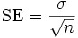
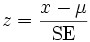

Z-test is a statistical formula that is used to determine if the difference between a sample mean and the population mean is large enough to be statistically significant. This test is primarily used to determine if the test scores of the samples are either within or outside the standard scores.
Steps to perform ZTest
This test requires the sample to be random and is taken from a population that is distributed normally. In order to perform this test, the following quantities should be known.
· s (the standard deviation of the population)
· µ (the mean of the population)
· x (the mean of the sample)
· n (the size of the sample)
1. Calculate the standard error (SE) of the mean:

2. Then compute the z-score for the Z-test as below.

3. Finally, the z score is compared to a Z table which contains the percent of area under the normal curve between the mean and the z score. Using this table will indicate whether the calculated z score is within the realm of chance or it is so different from the mean that the sample mean is unlikely to have happened by chance.
Using the Formula
The Z-test can be carried out on any two series values by using the ZTest method of BasicStatisticalFormuals class. Below table gives the detailed description of this method. The method returns an instance of ZTestResult object that saves the intermediate results and also the final z score of the test.
|
Method Name |
Parameters |
Return Value |
|
ZTest |
1. HypothesizedMeanDifference: the difference between the population means. 2. VarianceOfFirstSeries: the variance within the first series population. 3. VarianceOfSecondSeries: the variance within the second series population. 4. Probability: the probability that gives the confidence level. 5. FirstSeries: A ChartSeries object that stores the first group of data. 6. SecondSeries: A ChartSeries object that stores the second group of data. |
An ZTestResult object that has the following members:
· FirstSeriesMean · SecondSeriesMean · FirstSeriesVariance · SecondSeriesVariance · ZValue · ProbabilityZOneTail · ZCriticalValueOneTail · ProbabilityZTwoTail · ZCriticalValueTwoTail |
Example
Here is a code snippet that shows a sample usage.
|
[C#]
ZTestResult ztr = BasicStatisticalFormulas.ZTest( Convert.ToDouble(TextBox6.Text.ToString()), sqrtVarianceOfFirstSeries*sqrtVarianceOfFirstSeries, sqrtVarianceOfSecondSeries* sqrtVarianceOfSecondSeries,0.05,series1,series2); |
|
[VB.NET]
Dim ztr As ZTestResult = BasicStatisticalFormulas.ZTest(Convert.ToDouble(TextBox6.Text.ToString()), sqrtVarianceOfFirstSeries*sqrtVarianceOfFirstSeries, sqrtVarianceOfSecondSeries*sqrtVarianceOfSecondSeries, 0.05, series1, series2) |
 Note: For programming example, refer the following
Browser Sample:
Note: For programming example, refer the following
Browser Sample:
[Install Location]\Syncfusion\EssentialStudio\[Installed version]\Web\chart.web\Samples\3.5\Statistics\ChartStatisticalFormulas